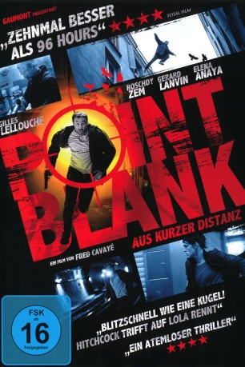

#3025 Point Blank - Aus kurzer Distanz
Alternativ: Point Blank (Englischer Titel)
 
 IMDB-Wertung: 6.8 / 10
IMDB-Wertung: 6.8 / 10  Metascore: 75
Metascore: 75 
Samuel (G. Lellouche) beobachtet während seines Jobs als Krankenpfleger, wie ein Unbekannter einen seiner Patienten töten will. Gerade noch rechtzeitig kann er ihn daran hindern. Doch die Rechnung erfolgt auf dem Fuß. Bereits am nächsten Tag wird seine hochschwangere Freundin Nadia (E. Anaya) entführt und er gezwungen, wenn er sie lebend wiedersehen will, den von der Polizei gesuchten Hugo Sartet (R. Zem) aus der Klinik zu schmuggeln. Doch alles läuft schief und schon bald befindet sich Samuel zusammen mit Sartet auf einer waghalsigen Flucht durch die Stadt. Gejagt von Polizei und Gangster, wissen sie schon bald nicht mehr, wo sie sich noch verstecken können …
Jahr: 2010
Dauer: 84 Minuten
FSK: 16
Land: Frankreich Studio: Koch MediaTonspuren:
Untertitel:
Auflösung: 1080p (1920x816) Größe: 10649 MB
Genre: Action, Thriller, Krimi
Regisseur: Fred Cavayé
Drehbuch: Fred Cavayé, Guillaume Lemans
Soundtrack: Klaus Badelt
Darsteller:
 Gilles Lellouche als Samuel Pierret
Gilles Lellouche als Samuel Pierret Roschdy Zem als Hugo Sartet
Roschdy Zem als Hugo Sartet Gérard Lanvin als Commandant Patrick Werner
Gérard Lanvin als Commandant Patrick Werner Elena Anaya als Nadia Pierret
Elena Anaya als Nadia Pierret Moussa Maaskri als Capitaine Vogel
Moussa Maaskri als Capitaine Vogel Virgile Bramly als Capitaine Mansart
Virgile Bramly als Capitaine Mansart Nicky Naudé als Capitaine Richert
Nicky Naudé als Capitaine Richert Sebastien Vandenberghe als Policier barrage Samuel
Sebastien Vandenberghe als Policier barrage Samuel- Jade Breidi als Capitaine équipe Fabre 2
- Cedric Cirotteau als Flic civil Quai des Orfèvres , uncredited
- Renée Fleming als Herself , archive footage, uncredited
- Mireille Perrier als Commandant Fabre
- Claire Pérot als Capitaine Anaïs Susini
- Pierre Benoist als Capitaine Mercier
- Valérie Dashwood als Capitaine Moreau
 Adel Bencherif als Luc Sartet
Adel Bencherif als Luc Sartet- Vincent Colombe als Interne de garde
- Chems Dahmani als Aide-soignant
- Gr��goire Bonnet als Jaffart, chef DPJ
- Brice Fournier als Marconi
- Patrice Guillain als Capitaine Auclert
- Max Morel als Max Collet
- Diane Stolojan als Témoin bus 1
- David Saada als Témoin bus 2
- Arnaud Maillard als Agent RATP
- Laurence Pollet-Villard als Gynécologue
- Julie Mouamma als Infirmière
- Bénédicte Dessombz als Réceptionniste hôpital
- Grégoire Guist'hau als Journaliste interview aide-soignant
- Sylvia Amicone als Journaliste LCI
- Frédéric Kontogom als Agent PC sécurité hôpital
- Dorothée Tavernier als Policière uniforme
- Bertrand Disset als Policier escalier
- Jean-Charles Rousseau als Policier flashball 1
- Frédéric Dessains als Policier flashball 2
- Jean Selesko als Policier salle de contrôle
- Sylvain Maury als Prévenu travesti
- Marie-Catherine Soyer als Léa, 7 ans
- Léa Philippe als Cousine Léa
- Angelo Aybar als Victor Spattoni
- Jacques Colliard als Francis Meyer
- Frans Boyer als Capitaine Marek
- Philippe Couerre als Fils Meyer
- Eric Malo als Homme de main
- Arnaud Klein als Capitaine équipe Fabre
 John Sehil als (uncredited
John Sehil als (uncredited
Datei: X:\2010(N-Z)\Point Blank - Aus kurzer Distanz (2010, FSK16, 1920x816).mkv seit 19.01.2016
Festplatte: HD 2010(G-Z)-2011(A-F)
 Es gibt insgesamt 115 Filme in der Gruppe '2010(N-Z)'
Es gibt insgesamt 115 Filme in der Gruppe '2010(N-Z)'